RSA Encryption & Frequency Analysis
Theory
This homework repeats the idea of Homework II (frequency analysis), but replaces the Caesar cipher with RSA encryption. I use very small prime numbers to make the process visible and easy to verify.
- Public key: (e, n)
- Private key: (d, n)
- Encryption:
C = M^e mod n - Decryption:
M = C^d mod n
Since I encrypt one letter at a time (no padding, no block mode), the mapping is a simple permutation of the alphabet — letter frequencies are preserved, and thus a naive frequency attack can still work.
Interactive Experiment (JS)
1) RSA Parameters
Hint: p=61, q=53, e=17 → n=3233, φ=3120, d=2753.
2) Plaintext
Cipher numbers
Decrypted text
3) Frequency Analysis
Plaintext frequencies
Ciphertext frequencies
4) Frequency Attack (naive)
Maps most frequent cipher symbols → most frequent English letters (␠, E, T, A, O, ...)
Guessed mapping
Guessed plaintext
Method (summary)
- Compute
n=p·q,φ=(p−1)(q−1). - Find
d = e^{-1} mod φusing the extended Euclidean algorithm. - Map each letter → integer (space=0, A=1,…,Z=26, comma=27, period=28).
- Encrypt with
C=M^e mod n; decrypt withM=C^d mod n. - Compare plaintext vs ciphertext frequency tables.
- Run naive frequency attack → check how much text can be recovered.
Observation
The experiment demonstrates that even with strong math, RSA without padding is not secure when applied per character: frequency patterns remain visible. Real cryptosystems use large keys and random padding to eliminate such patterns.
Experimental Tests
To better understand how RSA encryption behaves when applied to individual characters, I performed four experimental tests using the JavaScript tool above. Each test uses different message structures or key parameters to observe how frequency patterns appear in ciphertexts and how effectively a simple frequency-based attack can recover information.
Results and Discussion
Test A – Normal sentence
Input: “THE QUICK BROWN FOX JUMPS OVER THE LAZY DOG AND RUNS AWAY.”
The ciphertext decrypts correctly, confirming the RSA process. Frequency tables show that the distribution of plaintext characters (space, E, T, A, O, …) matches exactly the distribution of ciphertext symbols (0, 3023, 3086, …). The naive frequency attack partially reconstructs the message structure but does not recover readable text. This demonstrates that one-letter RSA encryption preserves the statistical signature of the language.
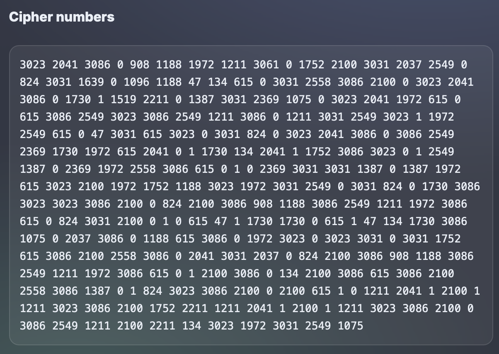
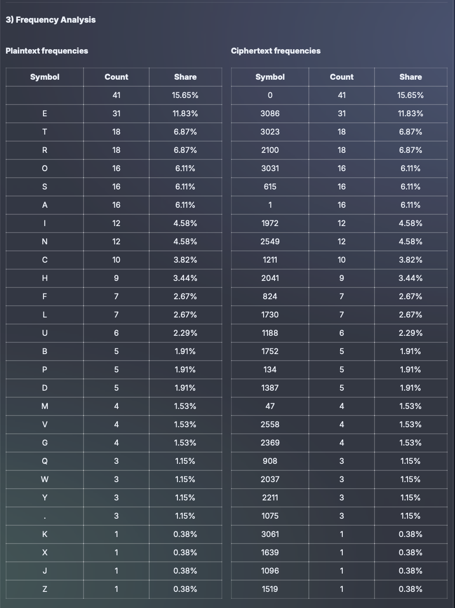
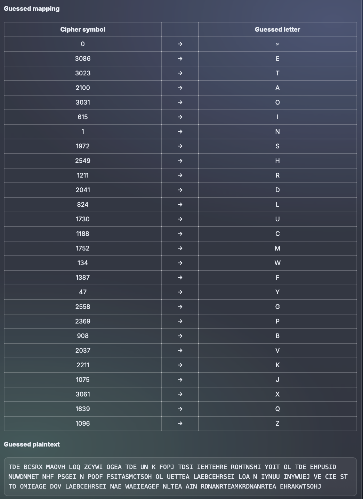
Test B – Short repetitive message
Input: “HELLO HELLO HELLO HELLO HELLO HELLO HELLO HELLO HELLO”
The ciphertext numbers (2041 3086 1730 3031 0 …) decrypt perfectly to the original text. Plaintext and ciphertext frequencies are identical: the letter L (33.9 %) corresponds to the ciphertext symbol 1730 (33.9 %). The naive attack reveals only repetitive patterns (“ET AOET AOET …”), proving that identical plaintext blocks always generate identical ciphertext blocks. RSA without padding leaks visible repetition.
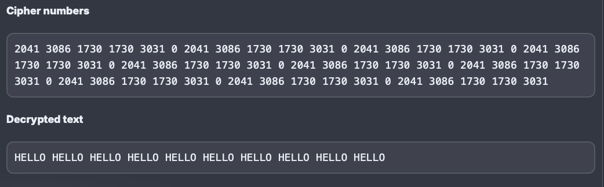
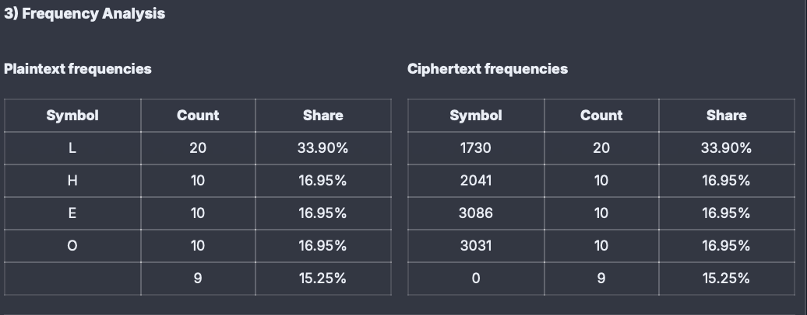
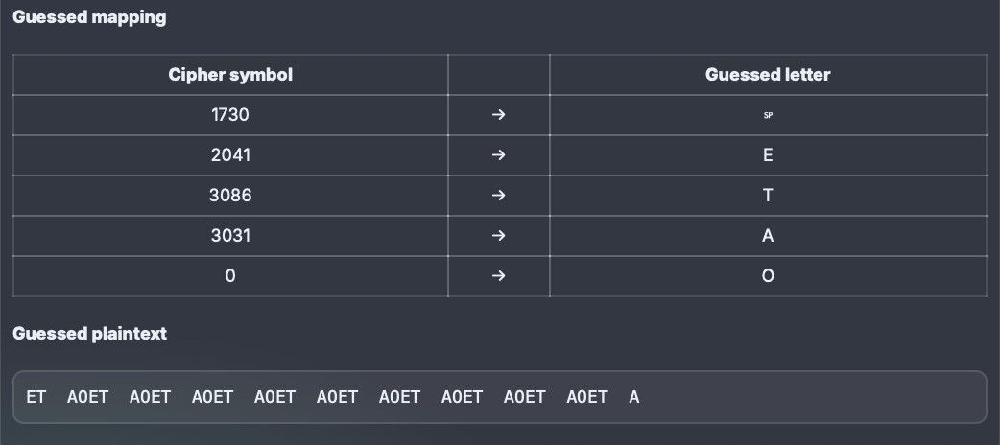
Test C – Very short message
Input: “HI”
The ciphertext (2041 1972) decrypts correctly to “HI”. Both plaintext and ciphertext have only two symbols with identical 50 % – 50 % shares. This minimal input makes statistical analysis impossible: the naive frequency attack maps one letter but cannot infer any meaningful plaintext. The experiment confirms that for very small texts, the frequency distribution is too limited to support any cryptanalytic recovery.
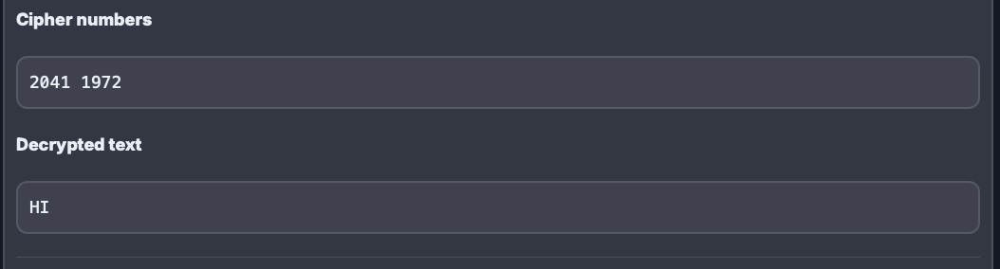
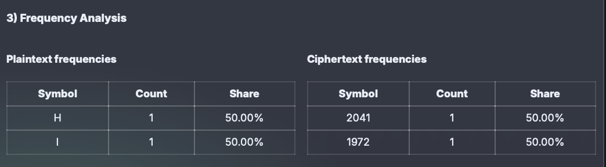
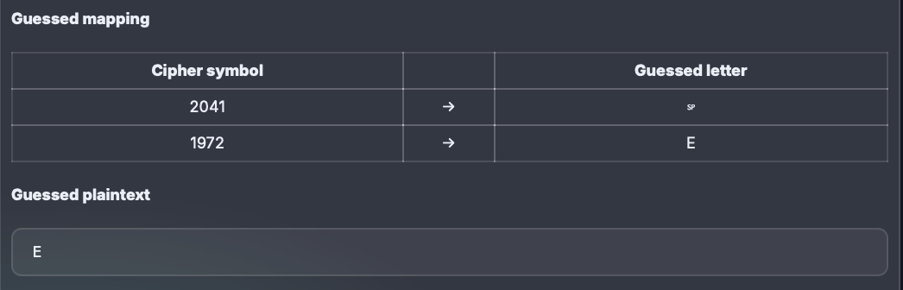
Test D – Different RSA keys
Input: Same as Test A, but with different primes (p = 47, q = 71).
Changing the RSA parameters modifies ciphertext numbers but keeps the statistical proportions identical. Frequency tables show again that the most common plaintext symbol (space = 15.6 %) matches the most common ciphertext symbol (0 = 15.6 %). The guessed plaintext remains partially random, confirming that the weakness lies not in the key size but in the per-character encryption model.
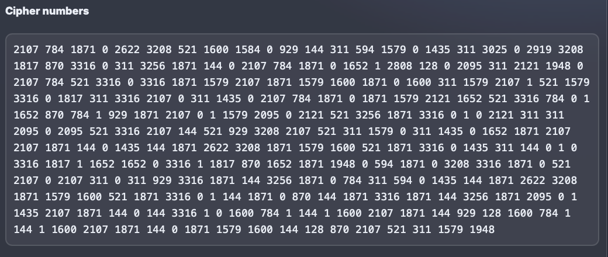
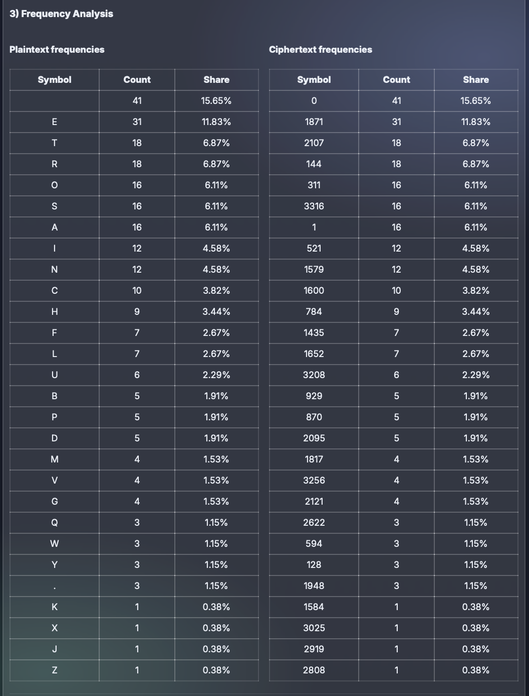
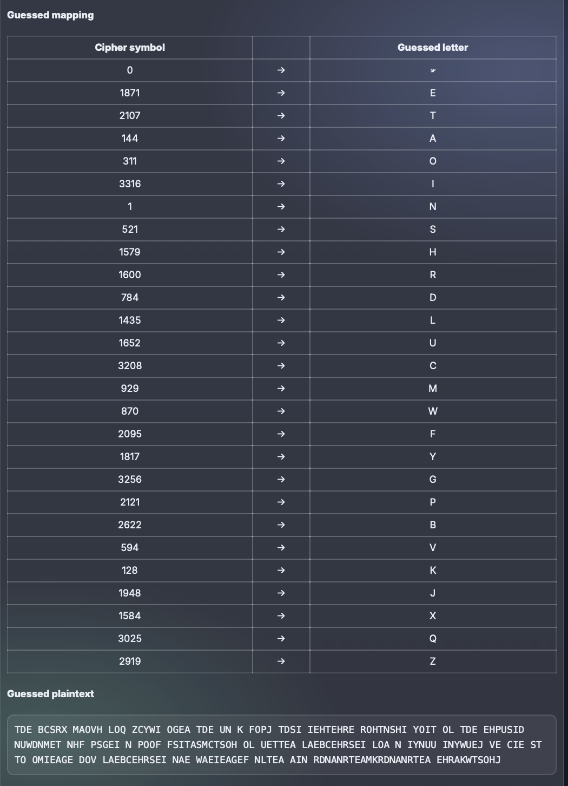
Conclusion
The experiments demonstrate that RSA encryption, when applied character by character, acts as a simple permutation of the alphabet rather than a secure transformation. Although mathematically strong, this usage leaks the frequency distribution of the underlying language. Identical plaintext symbols always produce identical ciphertext symbols, enabling frequency-based pattern recognition.
Tests with different key pairs confirmed that the observed weakness is independent of p, q, or e values. True RSA security relies on large numerical blocks and random padding schemes (e.g., OAEP) that hide statistical relationships between plaintext and ciphertext.
Therefore, while the small-scale RSA used here serves an educational purpose, it also highlights the importance of combining mathematical encryption with sound cryptographic engineering to achieve real confidentiality.